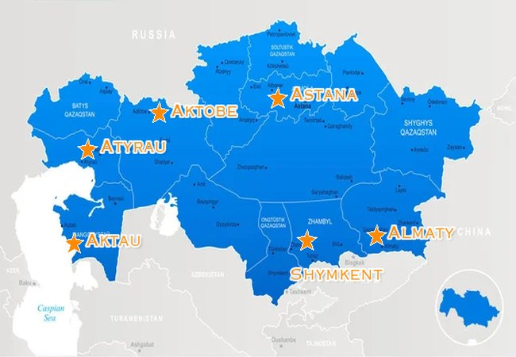

Как выбрать задвижку для водоснабжения: DN, PN и тип клина
Разбираем ключевые параметры при подборе задвижек для систем водоснабжения. Чем отличается обрезиненный клин от стального и когда что применять.
DN50–2000 тығындар, затворлар және клапандар өндіреміз. Қазақстан бойынша тікелей жеткізу — нарықтан 15% арзан.
АСТАНА 2024-ке құрылды. Қсовременное оборудование — WCB литьё, CNC обработка, испытания ISO 9001
Итальялық литейное оборудование (FOSECO), немецкие станки CNC (DMTG), автоматическая сварка Kemppi
ТР ТС 032-2013 · ISO 9001:2015 · ГОСТ 12815-96 · PED 2014/68/EU · ACS сертификация
18+ лет опыта в производстве запорной арматуры. Гарантия качества и технподдержка 24/7


Резеңкемен қапталған, болат, тот баспайтын болат. Штурвал, редуктор немесе электрожетекке арналған.
Заполните параметры — за 1 минуту система определит подходящий тип арматуры и мы подготовим индивидуальное КП.


Работаем с транспортными компаниями по всем регионам. Для крупных заказов — индивидуальные условия доставки.

Өтінім қалдырыңыз — 1 сағат ішінде жауап береміз және объектіңізге жеке КҰ дайындаймыз.